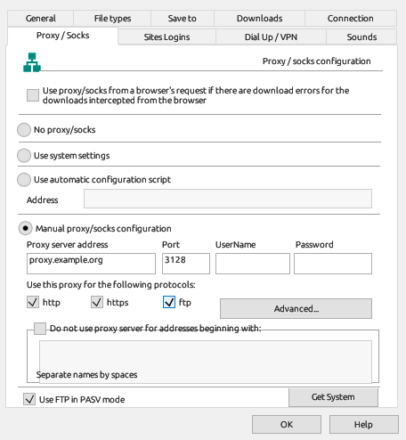
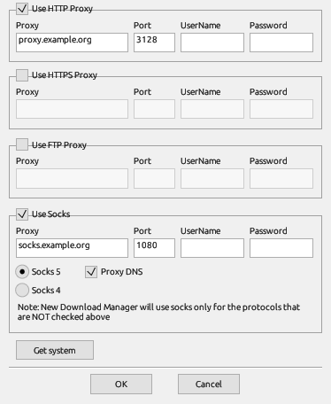

Downloads → Options (or Options on the toolbar) opens the settings, grouped in pages. This page describes each one.
Launch New Download Manager on startup starts NDM when you sign in. Automatically start downloading of URLs placed to clipboard watches the clipboard for download addresses. The browser list chooses which browsers NDM takes downloads from.
Use advanced browser integration also takes downloads from other programs. While it is on, the system proxy for plain http points at NDM, which takes the files a browser would hand it and passes everything else on. Secure (https) traffic isn't affected, and your own proxy setting comes back when you turn it off or exit NDM.
The file extensions NDM takes over from browsers, and the sites and addresses it never takes downloads from.
The folder of each category, the temporary folder for unfinished downloads, and whether a finished file gets the date the server reports.
Which windows open when a download starts and finishes, what happens when an address is already in the list, which virus checker runs on finished files, and the User-Agent sent for downloads you add yourself.

Choose one of:
Under the manual proxy, http, https and ftp choose which addresses go through it. With ftp ticked, the proxy downloads ftp:// files for NDM. A proxy that can't send parts of a file downloads it over one connection, and that download can't resume.
Advanced... sets separate HTTPS and FTP proxies and a SOCKS proxy. SOCKS is used for the protocols not ticked on the page, ftp included. For ftp:// addresses the FTP proxy comes first, then the manual proxy if ftp is ticked, then SOCKS.

With Socks 5, Proxy DNS decides who looks up the server names. Ticked, the SOCKS proxy does, which also works for names only the proxy's network knows. Unticked, NDM looks names up itself and sends the proxy an address; untick it when the proxy can't look up names your own network uses. Socks 4 always sends an address.
Do not use proxy server for addresses beginning with lists hosts that go direct. Use proxy/socks from a browser's request retries a failed browser download through the browser's own proxy. Get System copies the system proxy into the manual fields.
User names and passwords NDM sends to sites that ask for them.
A dial-up or VPN connection that NDM connects before downloading when the computer is offline, with its user name, password and how often to redial. On Windows these are Windows' own connections; on Linux, NetworkManager's VPN, WireGuard, PPPoE and mobile connections.
Sounds for a finished or failed download and for a queue starting and stopping.